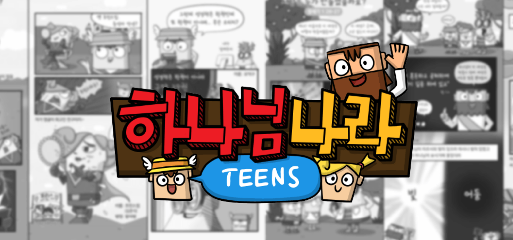

전문적인 다음세대 교육
우리는 다음세대 전문 단체인 '히즈쇼'와 함께합니다

히즈쇼와 함께하는 체계적 교육
-
연령별 맞춤 커리큘럼
유아부터 청소년까지 각 연령에 맞는 체계적인 성경 교육 프로그램
-
창의적 교육 방법
게임, 율동, 멀티미디어를 활용한 재미있고 효과적인 학습
-
전문 교재 및 자료
검증된 교육 콘텐츠와 다양한 교육 자료 제공
-
지속적인 교사 교육
교사들의 전문성 향상을 위한 정기적인 교육과 지원
교회와 가정의 협력
우리는 교회와 가정이 함께 자녀 신앙을 만들어갑니다
교회에서
- 6명의 전담 교사들이 섬기고 있습니다
- 체계적인 성경 교육 프로그램 운영
- 개별 맞춤형 신앙 지도 (가들리 가든)
- 또래 친구들과의 신앙 공동체 형성
가정에서
- 부모와 자녀의 신앙 대화 지원
- 가정 예배 가이드 제공
- 가정용 신앙 교육 자료 지원
- 부모 상담 및 교육 프로그램 (기독학부모교실)
함께 만들어가는 신앙 여정
교회에서 배운 말씀이 가정에서 실천되고, 가정에서의 신앙 경험이 교회에서 나누어지는 선순환 구조를 통해 자녀들의 온전한 신앙 성장을 돕습니다. 부모님들께는 자녀와 함께 나눌 수 있는 신앙 이야기와 활동을 정기적으로 제공하여, 가정이 작은 교회가 될 수 있도록 지원합니다.
우리의 양육 철학
우리는 학생들을 교육이 아닌 양육합니다
성장 중심
단순한 지식 전달이 아닌, 각자의 속도에 맞춘 영적 성장을 추구합니다. 하나님과의 개인적인 관계 형성을 가장 중요하게 여깁니다.
사랑 기반
하나님의 사랑을 바탕으로 한 따뜻한 관계 속에서 신앙이 자라날 수 있도록 안전하고 사랑이 넘치는 환경을 조성합니다.
공동체 지향
혼자가 아닌 함께 자라가는 신앙 공동체를 만들어갑니다. 서로를 격려하고 도우며 함께 하나님 나라를 꿈꾸는 세대로 양육합니다.
양육과 교육의 차이
일반적인 교육
- 지식과 정보 전달 중심
- 일방적인 가르침
- 결과와 성과 중심
- 획일적인 기준
우리의 양육
- 인격과 영성 성장 중심
- 상호작용과 소통
- 과정과 관계 중심
- 개별적인 배려와 사랑